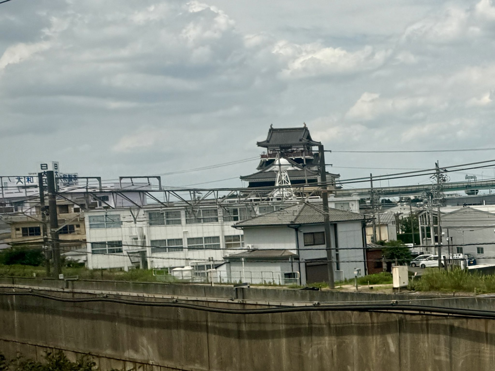

- 区间
- 名古屋 → 岐阜羽岛
- 座位侧
- E座・往京都方向右侧
- 通过时间
- 希望号离开东京後约99分钟
- 可见时间
- 几秒钟概略值；会随列车与车速而变动。
背後的故事
清洲是什麽样的城？
清洲城於15世纪，在尾张守护斯波氏统治下兴建，战国时代成为织田信长的据点而大为发展。1560年信长从此出兵，在桶狭间击败入侵的今川义元，确立对尾张的控制。清洲位於东海道与美浓、伊势道路的战略交会点，城下町相当繁荣。1582年信长遇刺後，羽柴（丰臣）秀吉、柴田胜家、丹羽长秀与池田恒兴在此召开清洲会议，决定继承人与领地分配，成为日本史上着名的转折。
观看重点
今天看见的天守是什麽？
1610年，依德川家康命令，所谓「清洲越」将清洲全城与行政功能搬往新的名古屋城下町。清洲城因此废城，原有城郭建筑皆未留存。五条川旁今天的白色与朱红色天守，是清须市於1989年为观光与地方振兴兴建的现代模拟天守。它并非历史天守的忠实复原，但鲜明色彩与醒目位置，使它成为新的地方地标。
馆内以展示与互动设施，介绍信长、秀吉、家康与清洲的关系。天守、河川、红色大手桥，以及周边的清洲城信长公园构成一幅风景，樱花季尤其受欢迎。
列车上，天守的红色栏杆与白墙会在轨道北侧一闪而过，提前看向E座车窗。新干线速度下只看得到几秒，但东海道沿线很少有城离铁道这麽近，正是这一瞬间令人难忘。
夜间点灯有季节性，并非全年：通常在冬季清洲Illumi与春季樱花祭期间举行。有点灯的夜晚，朱红色天守彷佛独自浮在漆黑车窗里。日期每年不同，请查市府官方信息。
摄影提示
如何在三秒内拍到
从行进列车拍清楚清洲城并不容易：它只出现约三秒，又紧邻轨道，因此掠过得非常快。等看见才举相机，往往已错过。关键是出现前就对准、等待。日本铁道迷常尝试这个拍摄，还称它为「清洲城挑战」。
从东京往新大阪时，离开名古屋後就准备好看北侧车窗。线索是麒麟啤酒名古屋工场：一排巨大银色储槽填满车窗後，下一个就是清洲城。城约在名古屋出发后三分钟出现，储槽过後就保持取景并开始数秒。
从新大阪往东京时顺序相反：先城，後麒麟工场。较早的提示是约四分钟前的Solar Ark。城略早於名古屋到站广播出现，不要等广播才准备，否则会太迟。在列车尚未减速、仍高速行进时就准备好。
可提高快门速度（约1/1000秒）或使用连拍，即使全速行进也有机会定格天守。镜头靠近玻璃可减少多数反光。在座位上透过车窗拍摄即可，请避免站在车厢通道或玄关区拍摄，以免妨碍其他旅客。
地图
位置一览
打开地图切换景点位置与新干线观赏位置。
乘车时
如何找到清洲城
看看下一处车窗风景
使用GPS查看你的位置、下一处风景与座位侧。不必选择列车。
地图：© OpenStreetMap contributors
会使用你的位置，也提供语音导览。你可以只使用地图。
选择列车，查看时间
选择与你搭乘相符的时刻表，查看清洲城预计何时出现，以及应看哪一侧。
示意画面・时间仅为范例
不需要位置权限。时间为预估值，列车延误可能使其改变。
动态风景
动态中的清洲城
离开名古屋後，看看五条川旁的清洲城。
点灯中的清洲城。
本视频使用YouTube官方嵌入播放器。
延伸阅读
参考资料
官方指引与车窗风景纪录。